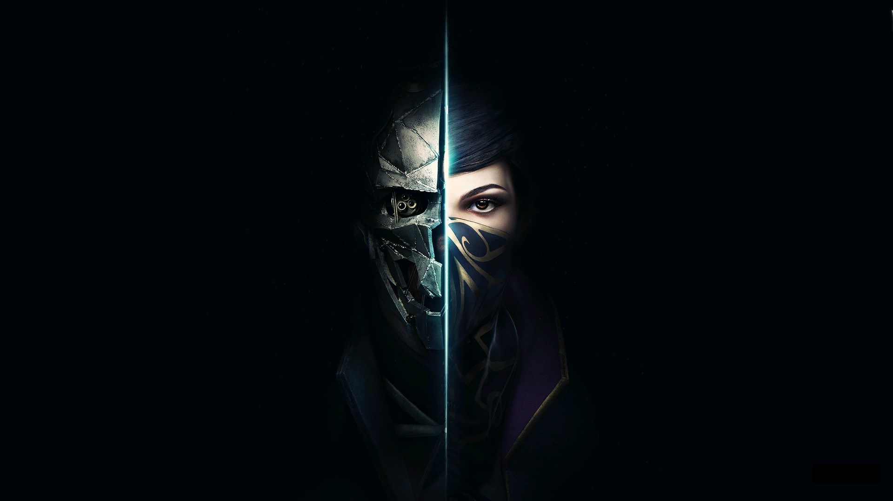

Template
Dishonored 2
Rating: 9.3
No two playthroughs are the same in Dishonored 2. Developer Arkane has doubled down on the original’s play-your-way formula with two separate sets of skills, a deep and multifaceted world, and a dizzying array of level designs that affect your approach to each new area. Whether you choose a stealthy or bloody approach, each one of your playthroughs is an addition to the wide range of stories that can be told within this wonderfully twisted universe.
15 years have gone by since the events of the original Dishonored, and the world of Empress of the Isles, Emily Kaldwin, is once again thrown into disarray when her evil aunt appears with suspicious designs on her throne. It’s a pedestrian catalyst to your most vital decision in Dishonored 2: will you play as Emily or her father and protector (and original Dishonored protagonist), Corvo Attano? Though their stories play out in much the same way, with well-crafted and low-key dialogue tailored to your character, it’s worth taking time to consider your choice, as it’s one you are stuck with for the rest of your 12 to 16-hour playthrough, depending on whether you choose high-chaos (quicker) or low (slower).
Splitting abilities and story details up between Emily and Corvo is a smart call on Arkane’s part, as the developer has put a lot of focus on each character’s individual skills, which can only be built up through time and a careful and considered search for upgrade-granting collectibles. Both Emily and Corvo work excellently in either a stealth style or violent playthrough, despite their different supernatural abilities.
Their basics are much the same, though. For those who want to play with a focus on combat, a wide range of ammo is available for your pistol and crossbow, and mines can be used to either stun or dismember your enemies. Should you prefer to play stealthily, each character has the handy ability to choke out enemies during combat if you parry them just right, and knock out enemies by dropping on them from above for a quiet takedown. In terms of supernatural abilities, Emily’s Far Reach works in much the same way as Corvo’s short-range Blink teleport, and both characters can be equipped with Dark Vision, allowing them to see enemies through walls to aid in stealth.
Where they differ is in the more advanced unlockable powers in the later stages that ramps up the fun. Take Emily’s Domino ability, for example: it links enemies together so they share the same fate. You can use this power to take down several enemies at once with a single sleeping dart while hidden in the rafters, or blast one enemy with your pistol and joyfully watch the blood spurt from a multitude of skulls. If you’re playing as Corvo your options are just as much of a good time: his Bend Time ability can stop time altogether in its later stages, allowing for magnificent slow-mo kills or a magical escape after assassinating someone the old-fashioned way.
All of their abilities can be combined in various ways, too, and playful experimentation makes for Dishonored 2’s most hilarious water-cooler moments. With careful timing and preparation, you can send one of Emily’s Doppelgangers into a fray, link her with several guards using Domino, then watch them attack her and unwittingly cut themselves to pieces. Or you could stop time with Corvo while fighting some enemies in an alleyway and possess a nearby rat, leaving them confused about where their prey has gone. In its best moments Dishonored 2 makes you feel like you can control any situation in any number of creative ways.
Keeping Things Interesting
You can’t lean too heavily on one approach in Dishonored 2 though, because Arkane keeps switching up central gameplay mechanics in each chapter, and that makes each one feel vital and distinct.
In the Dust District, for example, billows of dust will obscure your vision every five minutes or so - but also the guards’, giving you opportunities to slip by that don’t exist on any other map. In the Clockwork Mansion, the layout of each floor can be changed using levers, allowing for quick getaways or access to secret areas. In The Royal Conservatory, you must deal with enemies who can teleport in the same way you do. Those changes all have to be incorporated into your approach to any given situation.
Such unpredictable additions to an already complex world kept me constantly alert and thinking as I pursued my targets. And because mortality is ultimately a binary choice in Dishonored - kill fewer NPCs and you’ll be granted a ‘happier’ ending; kill more and you’ll progress more easily - this focus is very important.
The World and Those Who Dwell In it
Meanwhile, Dishonored 2’s world is busy doing a great job of accommodating any brand of chaos you can throw at it. The Southern-European-kissed city of Karnaca is not only beautiful, filled with lush greenery and hugged-by-a-whale-boat peppered harbour, but it’s as dense with secrets as Dishonored’s Dunwall, with layers of guard-infested main paths, twisting alleyways, hidden entrances, and tall, bloodfly-infested buildings.
While I did notice some pop-in issues on the PlayStation 4 (which I’ve exclusively played on for this review) in open areas - and one crash - they were no deal-breakers, and overall the detail Arkane has managed to stuff into Dishonored 2 is astounding. The gorgeous, painterly aesthetic has been carried over from the original, and every piece of furniture, artwork and branded oddity feels considered and cohesive. Part of the joy of exploring Karnaca is to uncover Arkane’s dense world building, from the eccentric advertisements to the newspapers expanding on the lore of the world - the suspects in a murder case, for example, or the technological advancements created by crazed industrialists that are shaking up the world.
The city feels alive. Unlike the streets of the original's Dunwall, where a rat plague was used as rationale behind their emptiness, Karnaca is thriving. NPCs beckon you over to give you an optional quest; a shopkeeper might unexpectedly ask you to hide from an approaching gang, or you’ll overhear a couple of blood-splattered whalers discussing the repercussions of something you did a chapter or two ago. As far as I can tell after two playthroughs, this (and more appearances of the deadly bloodfly nests based on the number of people you’ve killed) is about the extent of how your actions affect the world at large, minute-to-minute, but it’s still a neat touch.
The AI feels alive, too. Common enemies are incredibly receptive to the slightest movement, which means troubles for you if you attack one too loudly within a big group. It’s fun to mess around with them because of their attentiveness and their reactions to en masse attacks - draw an enemy’s attention over to a stun mine by throwing a bottle or making a noise, link him to his friends with Domino, and you can clear the area by exploiting human-like behavior on the first try.
But perhaps the most fun you can have with Dishonored 2’s AI is with its Clockwork Soldiers. They’re tall, tough clockwork robots with knives for arms that can kill you with a single swipe, but they’re receptive to movement, so if you blind one it will attack anything it senses... including other enemies. They, more than any other AI in Dishonored 2, are walking opportunities.
The liveliness in Dishonored 2’s world encourages a constant drive to explore, which is both rewarding due to the way interesting things are spread around the maps and also helpful during main quests. You are an assassin, but there are always at least two ways to dispense of your final mark in Dishonored 2 - and one of those can only be unlocked through careful examination of clues and evidence scattered around the area. During my second playthrough, I discovered vital information I’d breezed past in my first by paying particular attention to an important letter I’d ignored the first time around, and I imagine there’ll still be more to uncover in my third.
Emily, Corvo and Co
Dishonored’s broader story is ultimately predictable if you’re familiar with the first game (which you should be, because it’s excellent). It’s a particular shame that Dishonored 2’s intriguing villains aren’t given the character-building scenes they deserve - their primary drive appears to be ‘evil for the sake of evil’ - and finding diaries and audio logs that explain their motivations isn’t sufficient, nor is it quite the same as a story presented as cinematics with dialogue.
What does work, however, are Dishonored 2’s protagonists and its secondary players. The voicework of Corvo and Emily is delightfully understated - Erica Luttrell does a fine job at balancing subtlety, vulnerability, and disgust, while Stephen Russell (best known as Garrett in the Thief series) is warmly familiar as Dishonored 2’s (cut-throat) father figure.
But curiously, the biggest character arc given not to its protagonists, but to Meagan Foster (voiced by Rosario Dawson). She’s captain of the Dreadful Wale, the ship that serves as your base in between missions. A tough, driven woman with a mysterious past, Meagan’s story unfolds slowly and delicately throughout Dishonored 2, delivered with empathy by Dawson.
PC Version
The PC version of Dishonored 2 has had a rocky launch, with many gamers reporting major performance issues and giving it a “Mixed” rating on the Steam store page. Arkane has acknowledged the issues and promised an update to resolve them “in the coming days.”
That said, I haven’t been able to replicate those problems. My experience with Dishonored 2 wasn’t flawless, but I seem to have dodged the worst of it. Running a Core i7 4770K with a GeForce GTX 1070 and 16GB RAM on Arkane’s “Auto” settings (a mix of Very High and Ultra), I was initially faced with unstable frame rates: I would cruise along at 60fps for a good part of a level before experiencing random drops into the 40s. It never became unplayable, but it was certainly noticeable, and that’s something that shouldn’t happen on a system that exceeds the recommended spec (which lists a GTX 1060). A fresh restart and closing down background processes like a video streaming on my second screen allowed me to play without significant variance in the frame rate for a good few hours, even in instances of high action.
Then I tried to replicate some of the more egregious reports I’d heard about PC performance. After reading through Bethesda’s performance FAQ, I experimented with setting everything on Ultra, on which, somewhat to my surprise, I was still able to maintain 60fps in virtually all situations. The one setting that did seem to have a negative impact, oddly enough, was turning off Vsync. While disabling Vsync will normally uncap your frame rate and allow your game to run as fast as it can at a given moment, in this case disabling the setting seems to introduce inexplicable jitter to the frame rate in complex scenes. Though, again, the dips were never to the point of making it unplayable - I never saw my frame rate counter drop below 30 in any of my stress tests.
Alt + Tabbing out and back in (another possible culprit nominated by Bethesda) seemed like it might cause a gradual, progressive increase in instances of jittery frame rate, but I didn’t test this extensively enough to say for sure how much of an impact it had. Restarting the game almost always granted me a smooth 60 fps for a good while in cases where I suspected this was happening. In general, the game was very well-behaved with Alt + Tab in the short term. I wasn’t able to pinpoint exactly what may have been causing issues for those with similar - or even better - hardware, but the recommendations I can give include keeping Vsync on, closing background processes, and restarting the game if framerate seems to become unstable after Alt +Tabbing out and back in. I ran into no instances of sub-60 framerate that were not solved by those steps.
The world looks fantastic on Ultra and Very High settings. Textures are far from breathtaking, especially if you’re used to playing with modded Ultra HD textures in other games, but they’re well above the standard of other multi-platform games I’ve seen this year. The lighting and post-processing is first-class, lending a delicious sense of atmosphere and depth to every location I skulked my way through. Even the distant backdrops that never become part of the playable space, like the soaring sea cliffs of Serkonos, are rendered with volumetric fog and lighting in such a way that they feel eerily real.
The menus are more than tolerable. My mouse cursor seemed to have some level of sluggishness and acceleration when navigating them, but there were no responsiveness issues actually clicking on options - a problem that still exists in Skyrim Special Edition, five years after the issue reared its head in the original game. The options available are also fairly respectable. Field of view is adjustable between 65 and 110 degrees (I found that my sweet spot is somewhere around 95).
The mouse and keyboard controls are overall very responsive and friendly. It's possible to adjust X and Y axis stick sensitivity individually if you’re playing with a controller, and mouse options allow you fine control over sensitivity and smoothing. You can also fine-tune the level of auto-aim or turn it off entirely, independently for mouse and controller. Finally, there’s an option called “Adaptive Resolution” that is supposed to be able to dynamically adjust resolution if your framerate starts to drop, but I found that it had no significant impact on my machine.
So this is a tricky one: for some people Dishonored is unplayable right now – I've seen streamers with beefier machines than mine struggle to maintain 20fps on relatively low settings – but we’ve had minimal issues. Thus our high recommendation comes with a caveat: to be safe, you should probably wait for the patch before you buy. If it runs poorly for you, and you opt for a wait and see approach instead of getting your money back now, don't play more than the two hours you're allowed to remain eligible for a Steam refund.
The Verdict
With two unique sets of skills to play with across 10 themed chapters that keep things interesting and a gorgeous, evocative world that feels alive, Dishonored 2 is a remarkable experience. Though I would have liked a little bit more originality in its central story, which again revolves around a usurper to the throne, it’s the stories that I’ve created on my own using its many creativity-enabling powers that I’ll remember, every graceful, fumbling, and hilarious one of them. I’m compelled to create many more in the months to come.